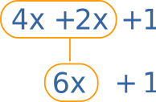
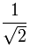
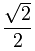

Simplify
Simplify: to make simpler!

One of the big jobs we do in Algebra is simplification.
You will often be asked to put something "in simplest form"
What is the Simplest Form?
In general, it is simpler when it is easier to use.
| Start with: | 5x + x − 3 | |
| Combine like terms: | 6x − 3 |
It is now a little easier to use.
And:
| Start with: | 3 6 | |
| Simplify the fraction by dividing top and bottom by 3: | 1 2 |
"Half" is definitely simpler than "three sixths", unless it is important to know that something was cut into sixths.
And:
| Start with: | 2w(5wy) | |
| Multiply the constants and variables: | 10w2y |
It is now a little easier to use.
And:
| Start with: | 2x2 − 6x + 2 x − 3 | |
| Polynomial long division: | 2x + 2 x − 3 |
And:
| Start with: | x2 − 2x − 3 | |
| Factoring: | (x−3)(x+1) |
That last example can be argued with! Some people say to remove parentheses to make it "simpler", but (x−3)(x+1) is usually a lot easier to use.
The moral of the story:
"Simplified" is sometimes obvious, but can also depend on what you want to do.
How to Simplify
There are many ways to simplify!
When we simplify we use similar skills to solving equations, and that page has some good advice.
Some of these things might help:
- Combine Like Terms
- Factor
- Expand (the opposite of factoring)
- Clear out fractions by multiplying
- Find some pattern you have seen before, like the difference of squares.
And Which Is Simpler Here?
Here is one more interesting case:
| This: |  | seems simple enough | ||
| But this: |  | has a rationalized denominator (normally considered simpler, and preferred by teachers!) |
Which is simpler? You decide!